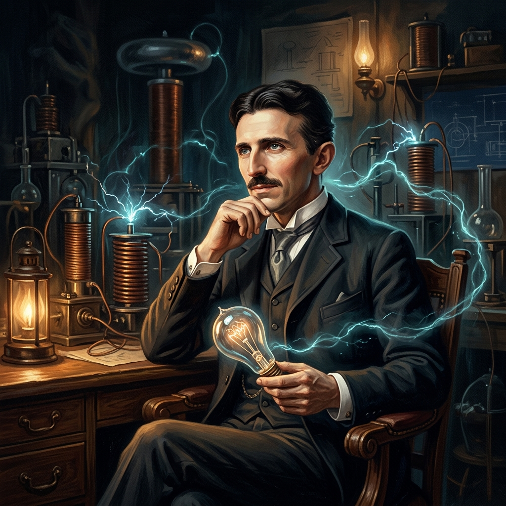

The Man Who Invented the Twentieth Century

Born on July 10, 1856, in the village of Smiljan (modern-day Croatia) during a midnight lightning storm, Nikola Tesla's life seemed destined to be defined by electricity. From an early age, he exhibited a brilliant mind, possessing an eidetic memory and a remarkable ability to visualize complex inventions in three dimensions without drafts. He studied engineering and physics at the Austrian Polytechnic in Graz, where his obsession with alternating current (AC) technology was ignited.
In 1884, Tesla immigrated to the United States, arriving in New York City with four cents in his pocket and a letter of recommendation to Thomas Edison. Working under Edison, Tesla proposed designs to improve the efficiency of DC generators. However, professional differences and a famous dispute over unpaid bonuses led Tesla to resign. He spent a difficult period working as a ditch digger before attracting investors who recognized the potential of his alternating current systems.
The turning point arrived in 1888 when industrialist George Westinghouse licensed Tesla’s patents for the AC induction motor and transformers. This partnership sparked the famous "War of the Currents" against Edison's direct current system. Tesla’s technology triumphed, lighting the 1893 World's Columbian Exposition in Chicago and proving the safety of AC. Soon after, Tesla designed the machinery at Niagara Falls, establishing the world's first large-scale hydroelectric power station.
Tesla spent his later decades pushing the boundaries of technology, inventing the Tesla Coil, investigating X-rays, and demonstrating wireless remote control (teleautomaton). His ultimate project was the Wardenclyffe Tower, designed to transmit free wireless electricity and communications globally. Though financial constraints halted his dreams and he passed away in obscurity in 1943, his designs laid the foundation for the modern electrical grid, remote control, and wireless technologies we use today.
Nikola Tesla is born in Smiljan, Austrian Empire, during an intense summer lightning storm. His mother remarks he will be a child of light.
Immigrates to the U.S. and joins Thomas Edison's Edison Machine Works. Disagreements over engineering methodology and direct vs alternating current quickly strain relations.
Patents the AC polyphase induction motor. George Westinghouse buys the patent licensing rights, initiating the epic War of the Currents against Edison.
Lit up the World's Columbian Exposition in Chicago using alternating current, demonstrating to millions the safety, efficiency, and scale of the AC system.
Builds the first major hydroelectric generator at Niagara Falls, successfully transmitting clean electricity over 20 miles to Buffalo, NY.
Begins construction of the Wardenclyffe Tower on Long Island, intending to build a global wireless communications and energy grid system.
Tesla passes away in his room at the New Yorker Hotel. Later that year, the U.S. Supreme Court invalidates Marconi's patents, recognizing Tesla's prior art in radio invention.
Explorations into the inventions that shaped our modern electrical reality.
Designed the complete polyphase alternating current power system including generators, transformers, and lines that power global grids today.
Invented the brushless AC induction motor, converting electricity into mechanical force without failure-prone carbon brushes, driving industrial automation.
A resonant electrical transformer circuit capable of producing ultra-high voltage and frequency. Crucial to early radio technology and plasma experiments.
Demonstrated the first radio-controlled miniature iron boat at Madison Square Garden in 1898, laying foundations for modern remote controls, guided tech, and robotics.
Patented basic transmitters and receivers prior to Marconi. Historically verified as the original designer of radio circuit communication technology.
Designed the generators at Adams Power Station, successfully proving that large-scale clean energy could be harvested and transmitted across great distances.
"If you want to find the secrets of the universe, think in terms of energy, frequency and vibration."
— Nikola Tesla